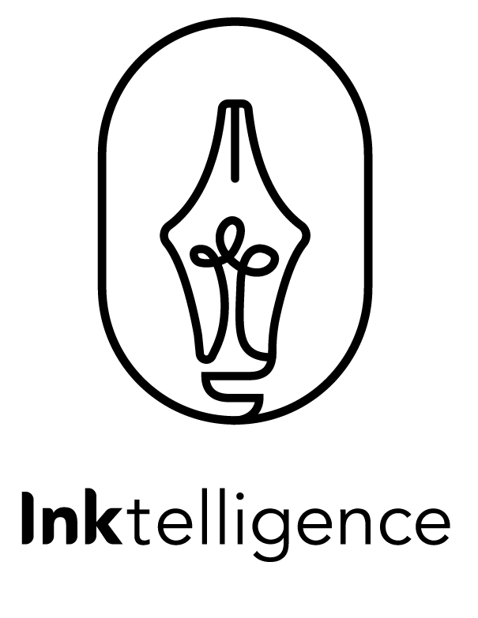

MICROSOFT
In the summer of 2018, I had the pleasure to work as a Product Design intern for Microsoft in Cambridge, Massachusetts. I was part of the Microsoft Garage, an intensive program that pushes interns to complete a product from start to finish in the span of twelve weeks. The Garage is also Microsoft’s official outlet for experimental projects. During my time at the Garage, I teamed up with seven other interns to collaborate on three different products. Enjoy!
MEET THE TEAM
Working side by side with the Microsoft’s Ink team from Redmond, our team, Inktelligence, has a total of eight members. Inktelligence consists of one program manager, one data scientist, one product designer, and five software engineers. Yet, the best part is that we are all current students from different schools across the country. Meet my team!


FONTMAKER
Challenge: Users want their digital experiences to maintain their personal touch and feel. The challenge is that the digital writing experience tends to restrict users to using pre-created fonts . Research shows that people want all parts of their digital experience to be as personalized as possible – and writing is no exception.
Pitched to us by Ink team from Redmond, our team was tasked to redesign an existing application, FontMaker. FontMaker is an application that allows users to create custom fonts based on their own handwriting. As the main designer on the team, I was responsible for:
- Conduct usability testing for the current version of FontMaker
- Identify any user experience issues and inconsistency in the current application’s interface
- Wireframe and prototype based on the feedback
- Design the onboarding experience
- Conduct usability testing for the updated version
- Look into how Machine Learning could enhance the user's experience, especially for language extension
- Design promotional/marketing assets
- Pitch the new version of FontMaker to different teams at Microsoft’s HQ
- Prepare the new FontMaker for shipping
Due to the Non-Disclosure Agreement, I cannot release any information until the product is officially shipped on the store. Come back later this year!


INKSTRUCTOR
While working on FontMaker, our team identified a really big potential for Microsoft's ink technology. Going beyond the assigned task of FontMaker’s redesign, Michael (PM) and I also looked into how Microsoft's ink technology could make an impact in the educational and occupational therapy space.
Challenge: How can Microsoft’s Ink technology make an impact in the educational space? How can we use Ink technology to best position Microsoft against competitors like iPads and Chromebooks in this market?
While I cannot disclose specific information regarding our findings due to my NDA, I can still talk more about the process. In you're interested, feel free to reach out to me!


Reflection
This section is still under works! Check back in just a little bit!